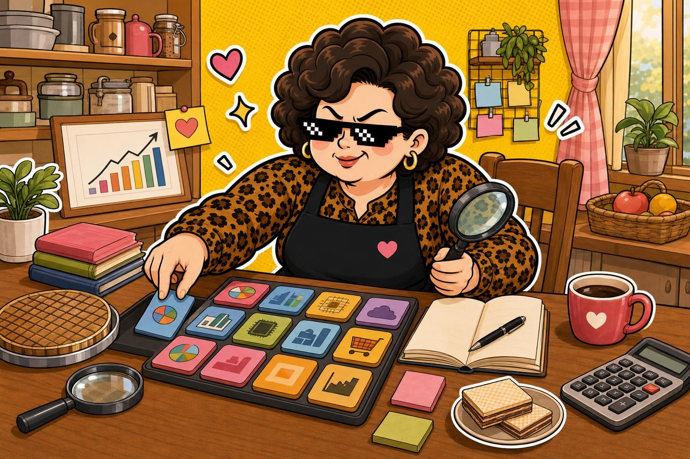

ETF 分散配置 · 2026-06-22
中信全球高股息：小資分散配置，阿姨先看一籃菜有沒有新鮮
00963 中信全球高股息 今天收在 12.50，漲跌 -0.14。它被放進清單，不是因為熱門口號，而是適合用小額練習看分散配置、淨值和成分股風險。
阿姨一句話：ETF 是一籃菜，不是保證不會跌的護身符。
收盤價12.50
漲跌▼ -0.14
觀察分類ETF 分散配置
今天這齣在演什麼
中信全球高股息 這類 ETF 的重點不是一句「很穩」或「配很多」就結束。小資族看 ETF，阿姨會先問三件事：一籃子裝什麼、價格有沒有太熱、遇到大盤震盪時能不能幫你分散一點壓力。
ETF 的故事通常不是單一公司，而是一籃成分股和指數規則。阿姨看 ETF 不只看配息，也會看分散度、成分股集中度、費用、折溢價和市場循環；越適合小資族，越不能只靠一句口號決定。
為什麼值得注意
中信全球高股息 股價門檻相對親民，適合拿來練習看一籃子配置；今天漲跌幅約 -1.11%，重點不是追高，而是看分散、淨值和成分股。
可以觀察的機會在於：如果成分股分散、費用合理、淨值和市價沒有過度脫節，ETF 會比較適合拿來做長期配置練習；但如果只靠配息或人氣撐場，價格一晃就會知道自己功課少寫一頁。
阿姨看點
- 配息品質：看配息來源和填息狀況，不要只看殖利率數字。
- 成分股：確認主要持股與產業集中度，別以為 ETF 一定很分散。
- 價格波動：ETF 仍會跟著成分股和大盤波動，配息或分散都不是保證答案。
阿姨看風險
- 風險等級：中
- 適合觀察：想用小額練習分散配置、比較 ETF 規則與成分股的人。
- 不適合：想找保證答案、不能接受波動，或沒有時間做功課的人。
⚠️ 阿姨的風險提醒（你一定要看）
📌 本站所有股票 ETF 內容僅供教育與資訊參考，不是投資建議，不保證任何收益。
📌 所有數字與範例皆為靜態展示資料，未串接即時市場數據，請勿以此做為買賣依據。
📌 任何投資都有風險，包括本金損失的可能。投資前請自行做功課、評估財務狀況，必要時諮詢專業顧問。